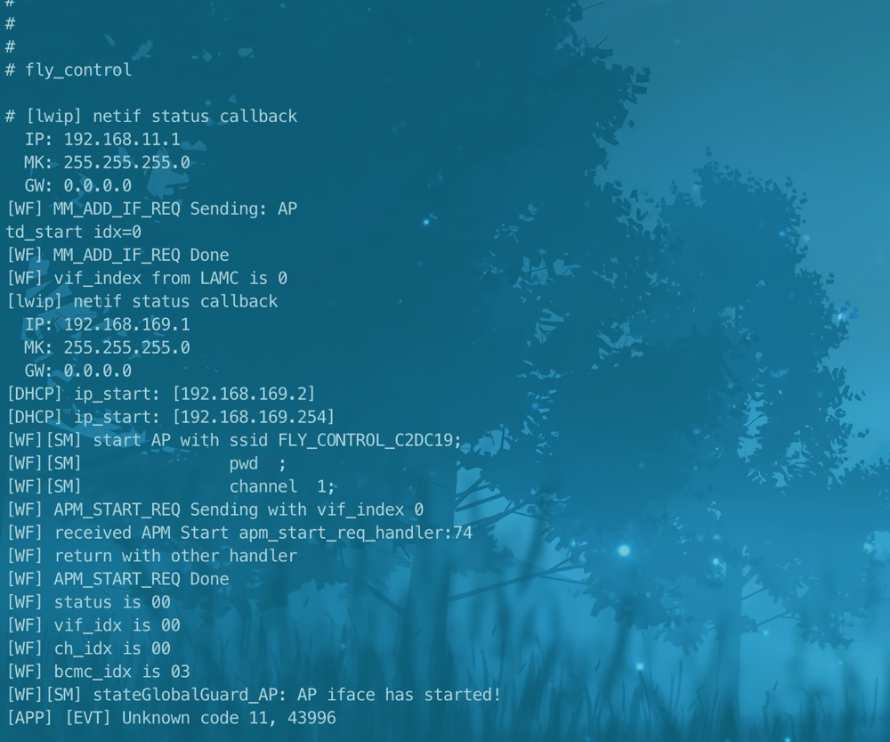
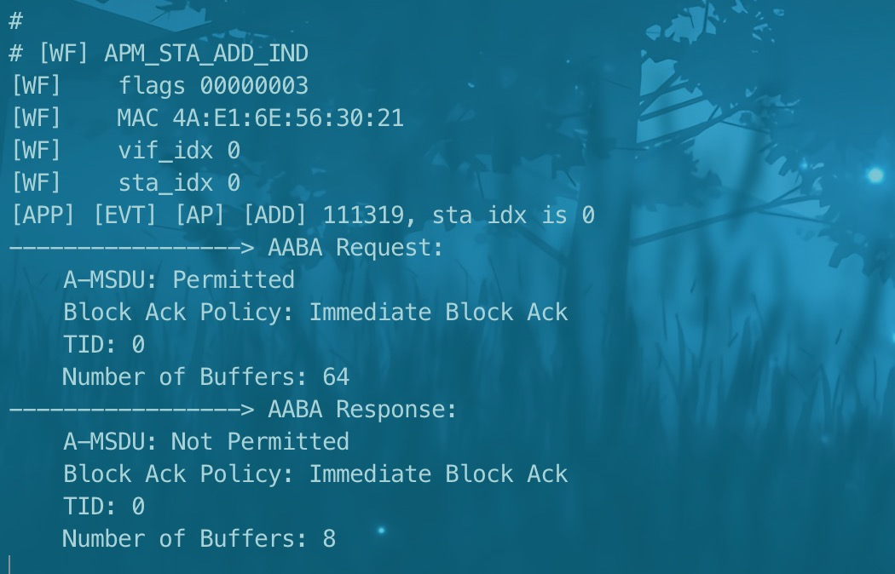
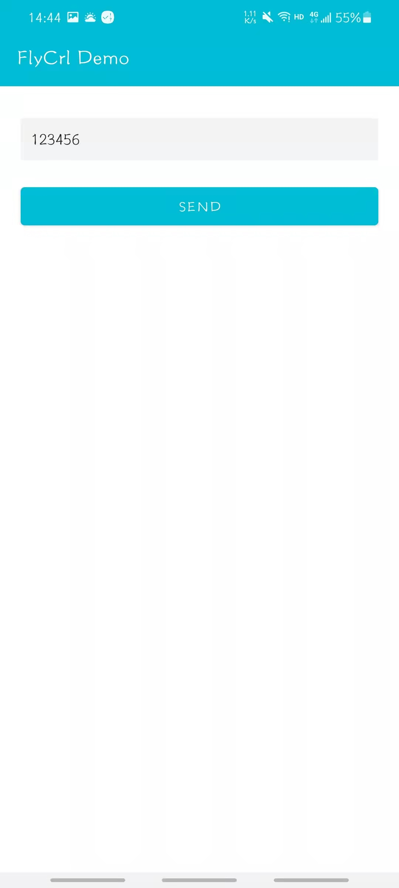

fly control
总览
本示例主要介绍如何通过wifi实现手机向BL602发送数据的过程
准备和使用步骤
使用之前需要一部安卓手机以及安装好Fly control APP
使用步骤：
进入
customer_app/bl602_demo_flycontrol工程中，BL602用脚本genromap编译，完成后下载Bin文件；在终端输入开启fly control的命令：
fly_control，会打印下图一log（部分）；打开手机wifi设置，连接wifi
FLY_CONTROL_xxxx，终端打印图二log（部分）；打开FlyCtl Demo APP，输入数据并点击SEND ，终端打印接收到的数据log；
